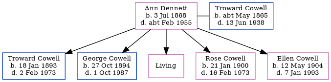

Ann Cowell (née Dennett) 1868 - c1955
[ Home ] | [ Calendar ] | [ Surnames Index ] | [ Errors ] | [ Family History ]Ann Dennett, the wife of Troward Cowell (the great-great-uncle of Nigel Horne), was born in Monkton, Kent, England on 3 Jul 18681,2,3,4,5,6,7,8, was baptised there on 16 Aug 1868 and also married Troward (a horseman with whom she had 5 children: Troward, George James, Annie Harriett, Rose Mary and Ellen May, along with 1 surviving child) there at St Mary Magdalene on 13 Oct 189110.
During her life, she was living at her birthplace in 18711, in 18812 and in 18913; at Gore End Farm, Birchington, Kent, England on 31 Mar 190111 and on 2 Apr 191112; at Granville House, Acol, Kent on 19 Jun 192113; and at Acol Hill Farm, Shottendane Road, Acol, Kent on 29 Sept 19396 following the death of her husband on 13 Jun 1938.
She died c. Feb 1955 in Thanet, Kent, England9.
Children
- Troward was born on 18 Jan 1893
- George James was born on 27 Oct 1894
- Rose Mary was born on 21 Jan 1900
- Ellen May was born on 12 May 1904
Citations
- 1871 England Census Online publication - Provo, UT, USA: The Generations Network, Inc., 2004.Original data - Census Returns of England and Wales, 1871. Kew, Surrey, England: The National Archives of the UK (TNA): Public Record Office (PRO), 1871. Data imaged from the National
- 1881 England Census Online publication - Provo, UT, USA: The Generations Network, Inc., 2004. 1881 British Isles Census Index provided by The Church of Jesus Christ of Latter-day Saints © Copyright 1999 Intellectual Reserve, Inc. All rights reserved. All use is subject to the
- 1891 England Census Online publication - Provo, UT, USA: The Generations Network, Inc., 2005.Original data - Census Returns of England and Wales, 1891. Kew, Surrey, England: The National Archives of the UK (TNA): Public Record Office (PRO), 1891. Data imaged from The National
- 1901 England Census Online publication - Provo, UT, USA: The Generations Network, Inc., 2005.Original data - Census Returns of England and Wales, 1901. Kew, Surrey, England: The National Archives of the UK (TNA): Public Record Office (PRO), 1901. Data imaged from the National
- 1911 England Census Online publication - Provo, UT, USA: Ancestry.com Operations, Inc., 2011.Original data - Census Returns of England and Wales, 1911. Kew, Surrey, England: The National Archives of the UK (TNA), 1911. Data imaged from the National Archives, London, England.
- 1939 Register - Findmypast (was recorded at this address)
- England & Wales births 1837-2006 - Findmypast
- England & Wales, FreeBMD Birth Index, 1837-1915 Online publication - Provo, UT, USA: The Generations Network, Inc., 2006.Original data - General Register Office. England and Wales Civil Registration Indexes. London, England: General Register Office. © Crown copyright. Published by permission of the Cont
- England & Wales deaths 1837-2007 - Findmypast
- 1911 England Census Online publication - Provo, UT, USA: Ancestry.com Operations, Inc., 2011.Original data - Census Returns of England and Wales, 1911. Kew, Surrey, England: The National Archives of the UK (TNA), 1911. Data imaged from the National Archives, London, England.
- 1901 England, Wales & Scotland Census - Findmypast (was age 32 and the wife of the head of the household)
- 1911 Census for England & Wales - Findmypast (was age 42 and the wife of the head of the household)
- 1921 Census Of England & Wales - Findmypast (was age 52 and the wife of the head of the household)
Media
England & Wales marriages 1837-2008 - BMD/M/1891/4/AZ/000078/051
1911 England, Wales & Scotland Census Transcription - GBC-1911-RG14-04479-0323-5
1901 England, Wales & Scotland Census Transcription - GBC-1901-0005518440
1939 Register Transcription - TNA-R39-1752-1752A-004-01
1939 Register Transcription - TNA-R39-1752-1752A-004-03
England & Wales births 1837-2006 - BMD/B/1868/3/AZ/000162/106
Canterbury Marriages - GBPRS/CANT/M/97043873/2
England & Wales marriages 1837-2008 - BMD/M/1891/4/AZ/000094/022
England & Wales deaths 1837-2007 - BMD/D/1955/1/AZ/000270/079
Family Tree
Map
Generated by ged2site. Last updated on Jul 3, 2024
Known Issues
Baptism information not used to determine a parent
No records of living with anyone